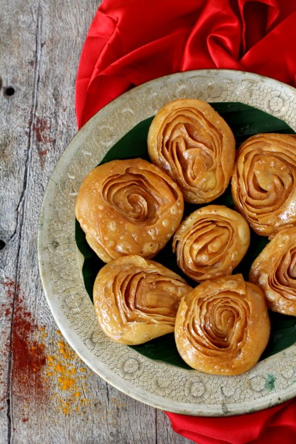

Chiroti is a traditional Karnataka sweet that is prepared on special occasions and religious festivals. It is also a very popular dessert in traditional Maharastra cuisine and is called Chirote.

Ingredients
Plain Flour - 2 cups (maida)
Ghee - 2 tbsps, melted
Salt - pinch
For paste:
Rice flour - 2 tbsps
Ghee - 1 1/2 tbsps, melted
For sugar syrup:
Sugar - 1 cup, granulated
Water - 1 cup
Cardamom powder: 1/2 tsp
Method
In a bowl, add the flour, salt and melted ghee and mix well. Slowly add enough water to make a smooth yet firm dough like puri dough. Cover the dough and keep aside for an hour.
For syrup heat water and granulated sugar in a vessel till sugar is melted and then continue to simmer till the mixture thickens to single thread consistency on low flame. Add cardamom powder and mix. Turn off flame. Keep aside.
In a small bowl, mix rice flour with melted ghee and keep aside. This paste is used to bind the layers of rotis.
Pinch off dough such that you have 6 large lemon sized balls. Roll each into thin rotis. Place a roti on your work surface, smear a tsp of the prepared rice flour paste all over the roti. Place another rolled out roti over it and again smear with a tsp of rice flour paste. Again repeat the process by placing another roti over the second roti and smear with rice flour paste. Now gently roll the pilled up rotis into a log and cut into 1/2" thick circles. Make another log following the same process using the remaining three rotis.
With the help of the rolling pin roll out each of the thick circles into thin rotis of 4" to 5" in diameter.
Heat oil for deep frying in a heavy bottomed vessel. Once hot, reduce flame to low medium and place 3 or 4 rolled out chirotis into the hot oil. Deep fry the chirotis on a medium flame, flipping them gently to cook all over. Once they turn to a golden shade, remove onto an absorbant paper.
Place the hot chirotis that have been removed from the oil into the prepared sugar syrup. Allow them to absorb the syrup.
Store in an airtight container and they stay fresh for at least one week to ten days.